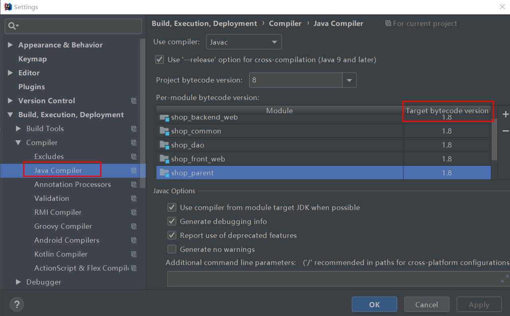
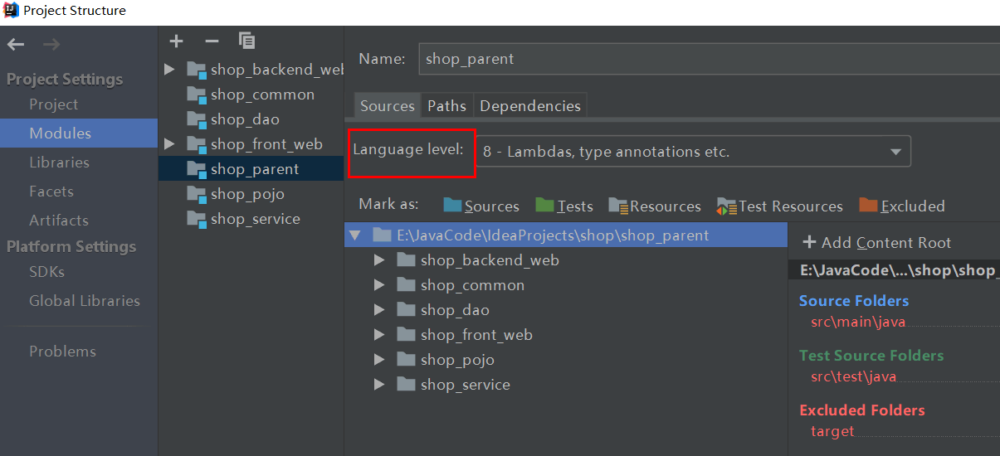

在 Intellij IDEA 中，我们需要设置 Settings 中的 Java Compiler 和 Project Structure 中的 Language Level 中的 jdk 版本为自己目前使用的版本，否则会经常提示我们 jdk 版本不正确导致的语法错误。在 Maven 项目中，jdk 的配置也有一些额外需要注意的地方。
比如配置为 jdk1.8 ：


但是在 Maven 项目中，Java Compiler 和 Language level 中的设置会自动变回到 pom.xml 文件中设置的 jdk 版本或者默认的 jdk1.5 版本。所以我们需要在 pom.xml 文件中修改 jdk 版本的配置或者自己添加配置：
<!-- 这里一般有 maven 的默认配置，修改即可 -->
<properties>
<project.build.sourceEncoding>UTF-8</project.build.sourceEncoding>
<maven.compiler.source>1.8</maven.compiler.source>
<maven.compiler.target>1.8</maven.compiler.target>
</properties>或者：
<build>
<plugins>
<plugin>
<groupId>org.apache.maven.plugins</groupId>
<artifactId>maven-compiler-plugin</artifactId>
<version>3.7.0</version>
<configuration>
<source>1.8</source>
<target>1.8</target>
</configuration>
</plugin>
</plugins>
</build>PS：如果觉得文章有什么地方写错了，哪里写得不好，或者有什么建议，欢迎指点。
欢迎您的点赞、收藏和评论！
（完）